A structured onboarding learning experience designed to help new employees understand the organisation, navigate essential information, apply workplace expectations, and take confident action.
Launch NexaTech Onboarding → Launch Storyline Experience →New employees often receive a large amount of information during onboarding, but information alone does not ensure that they can confidently apply what they have learned in the workplace. The NexaTech Onboarding Pathway addresses that gap by creating a structured learning journey that connects organisational knowledge with realistic workplace decisions, resource lookup, and practical next steps.
By the end of the NexaTech Onboarding Pathway, new employees will be able to navigate key organisational information, identify appropriate resources and contacts, apply workplace expectations to realistic situations, and translate their onboarding knowledge into concrete first-week and 30-day actions.
The NexaTech Onboarding Pathway is a portfolio project focused on creating a structured and practical onboarding experience for new employees.
The onboarding pathway moves learners from organisational orientation toward workplace application, resource finding, and concrete next steps.
Introduces the onboarding journey and establishes the context for the learning experience.
Understand / Apply Fully builtHelps learners understand the organisation's purpose, direction, and values.
Understand / Apply Fully builtHelps new employees understand teams, responsibilities, and where to go for common workplace needs.
Understand / Apply Fully builtUses realistic workplace situations to help learners apply organisational expectations and make appropriate decisions.
Analyse / Apply Storyline experienceProvides essential practical information that new employees need as they begin working.
Understand / Apply Fully builtConnects organisational culture and ways of working to realistic workplace behaviour.
Apply Fully builtHelps learners identify the appropriate tools, resources, and support channels for common workplace needs.
Apply / Navigate Fully builtReinforces key learning and helps learners translate onboarding knowledge into practical next actions.
Evaluate / Apply Fully builtThe experience is designed to move onboarding beyond information delivery and toward practical workplace application.
The pathway introduces organisational context before moving learners into workplace expectations, resources, and application.
Learners encounter realistic workplace situations that require them to apply expectations rather than simply recall information.
Learners are encouraged to locate and use relevant guidance and resources when making workplace decisions.
The experience closes the gap between completing onboarding and knowing what to do next through concrete first-week and 30-day actions.
The project demonstrates a progression from curriculum architecture through detailed scenario design and interactive development.
Defined the onboarding goal, learning progression, module structure, and learner journey.
Mapped learning objectives, content, interactions, scenarios, feedback, and learner actions.
Built the onboarding experience in Rise 360 and developed higher-complexity interactions using Storyline 360.
Designed the final learning experience to connect onboarding knowledge with practical workplace action.
A closer look at the instructional design and interactive development behind Module 4: Policies and Expectations, including scenario flow, decision points, feedback, resource lookup, and Storyline interaction logic, followed by screens from across the wider onboarding course.
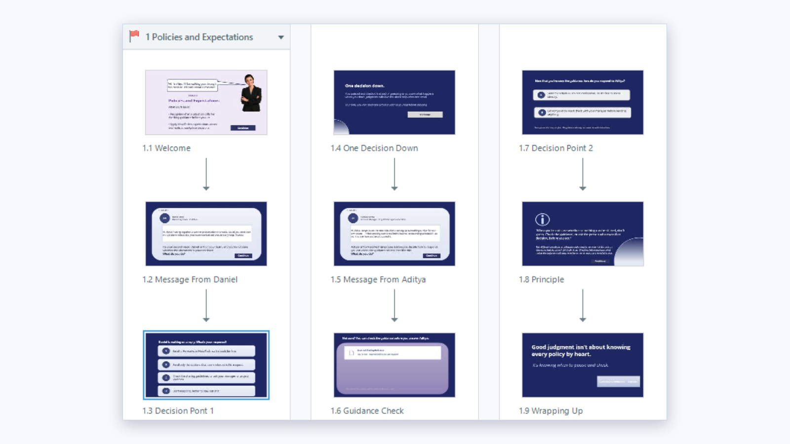
The Storyline flow maps the sequence of the Module 4 experience, including the opening, decision points, guidance check, principle, and wrap-up.
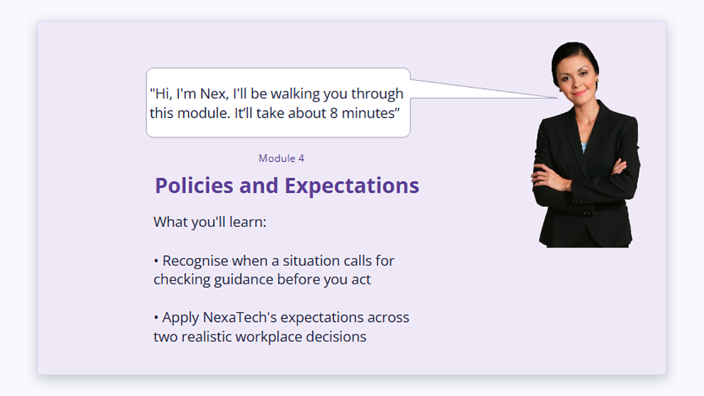
The module introduction establishes the learning focus and prepares learners to recognise when a situation requires checking guidance before acting.
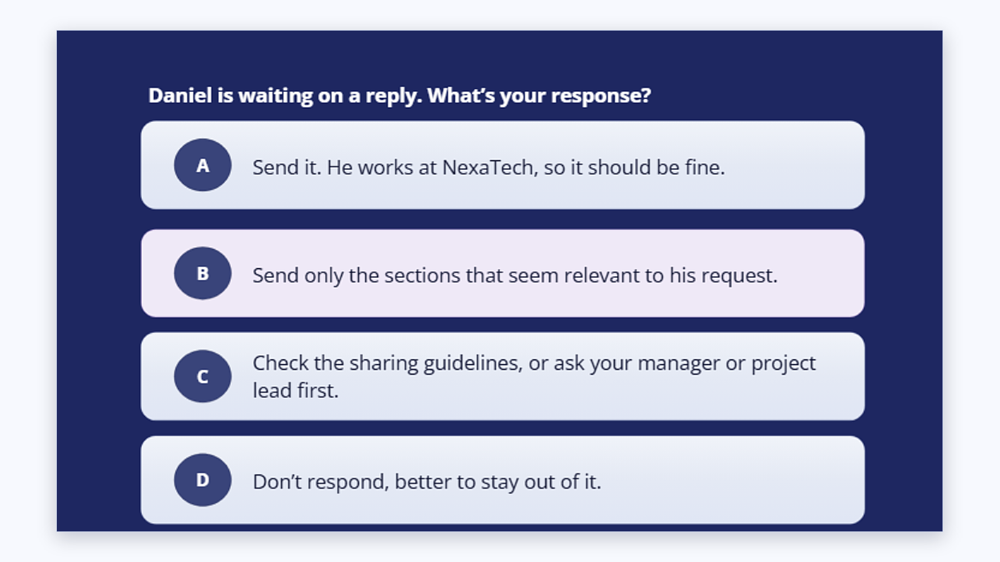
Learners respond to a realistic workplace situation by choosing how they would handle a document-sharing request.
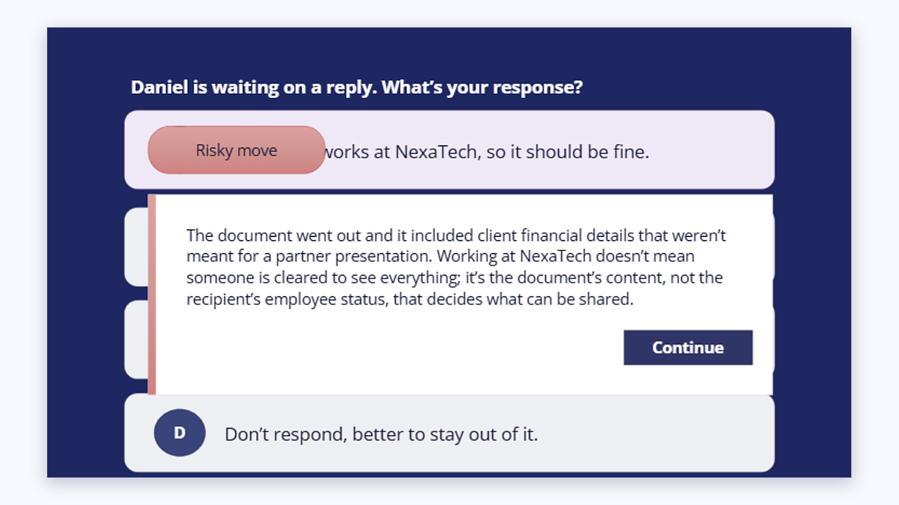
Feedback changes based on the learner's selected response, allowing each choice to surface the reasoning behind the appropriate workplace action.
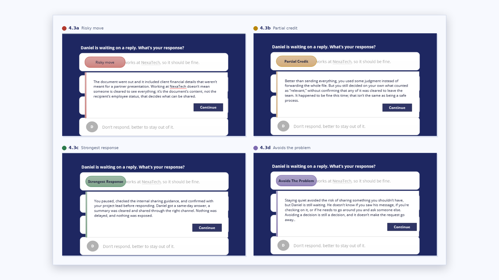
The four feedback states demonstrate how the interaction provides differentiated guidance for different learner decisions.
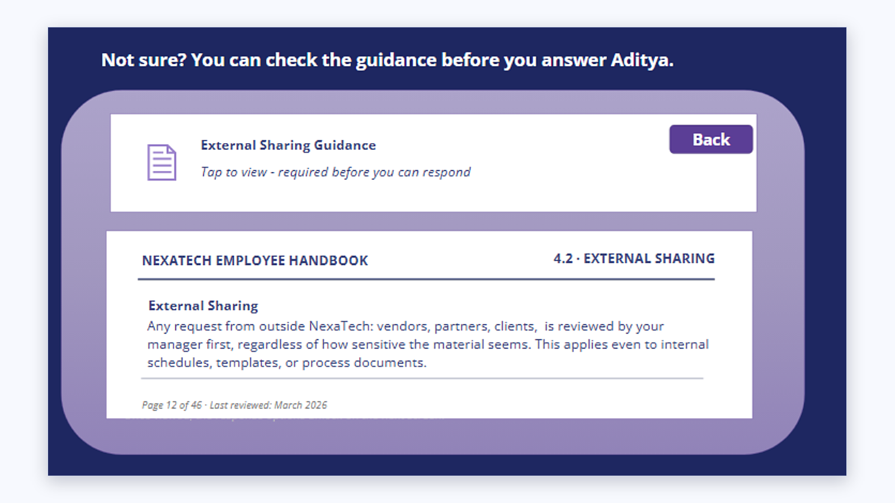
Learners can check the NexaTech Employee Handbook and external-sharing guidance before committing to a response.
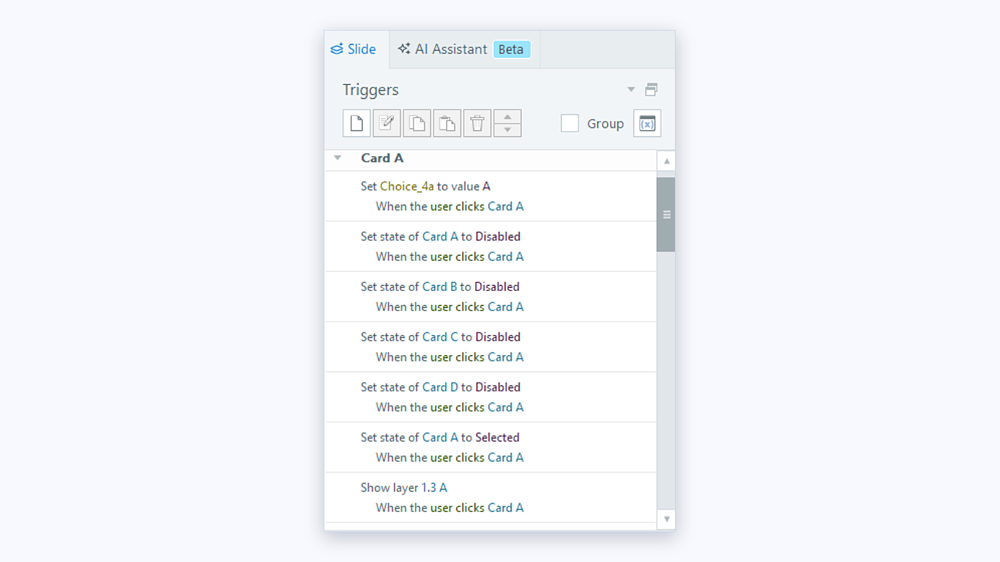
The Storyline trigger panel shows the interaction logic used to control card states and learner responses within the decision activity.
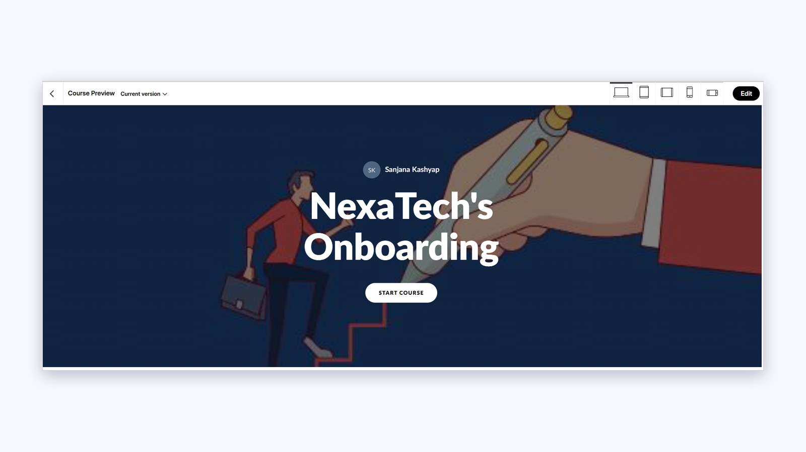
The branded landing screen introduces NexaTech's Onboarding and gives new employees a clear starting point with a single Start Course action.
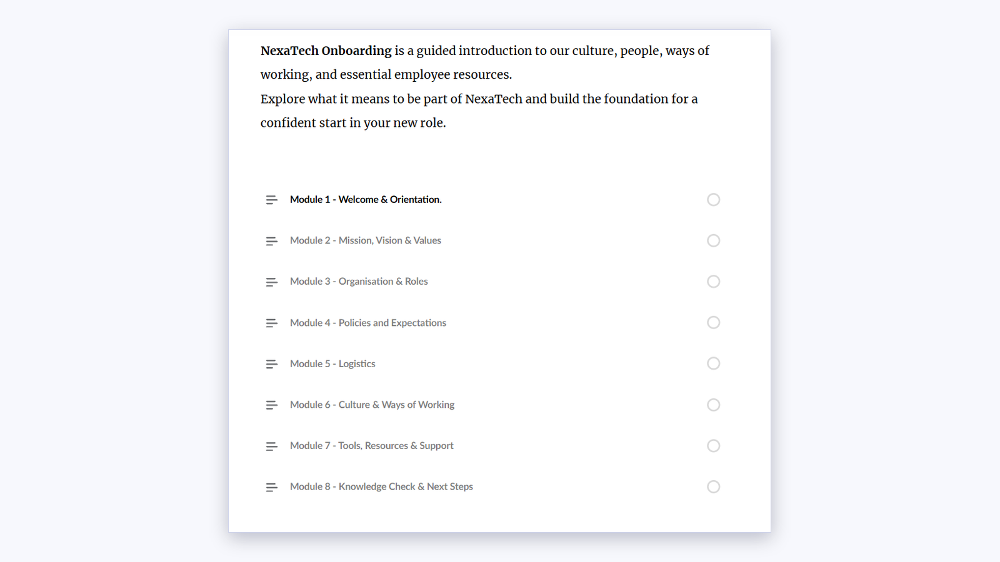
A short description and eight-module outline show new employees the full journey, from welcome and orientation through to the knowledge check and next steps.
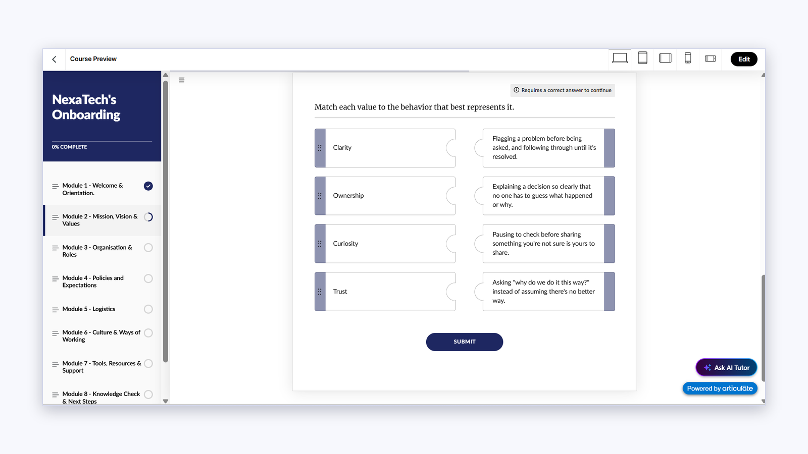
Learners match each company value to the behaviour that best represents it, turning abstract values into observable workplace actions.
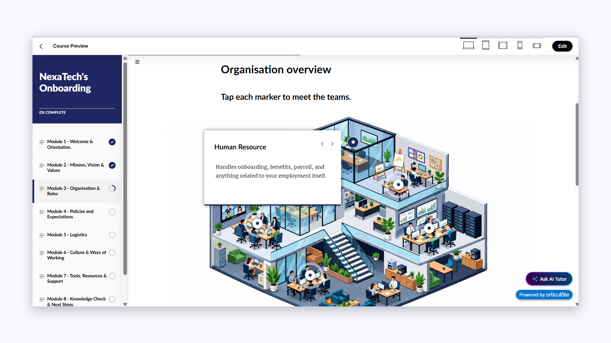
An interactive office graphic lets learners tap each marker to meet a team, such as Human Resource, and see what that team handles.
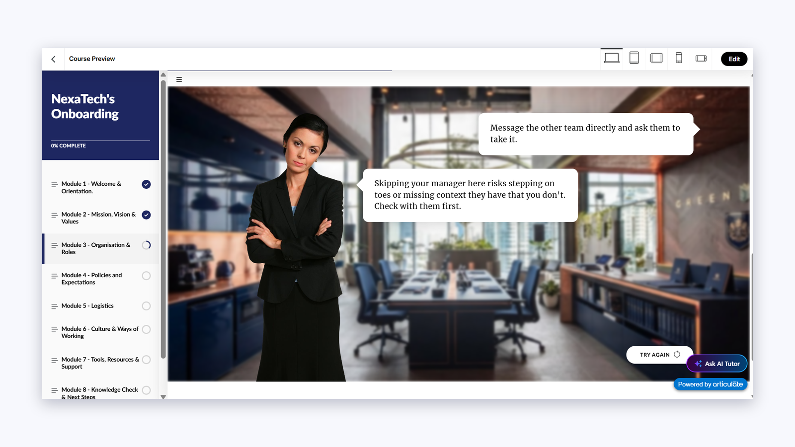
A workplace character explains why contacting another team directly can miss context, then invites the learner to try the decision again.
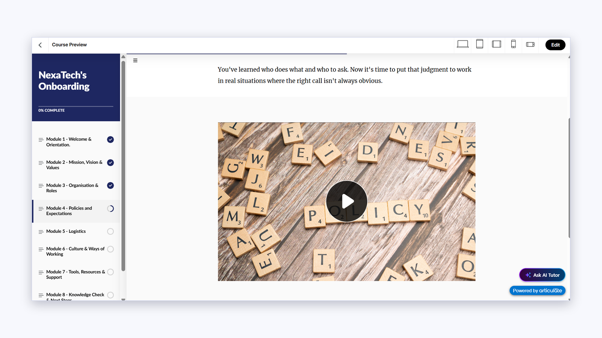
The module opens with a short video that moves learners from knowing who to ask toward applying judgment in situations where the right call isn't obvious.
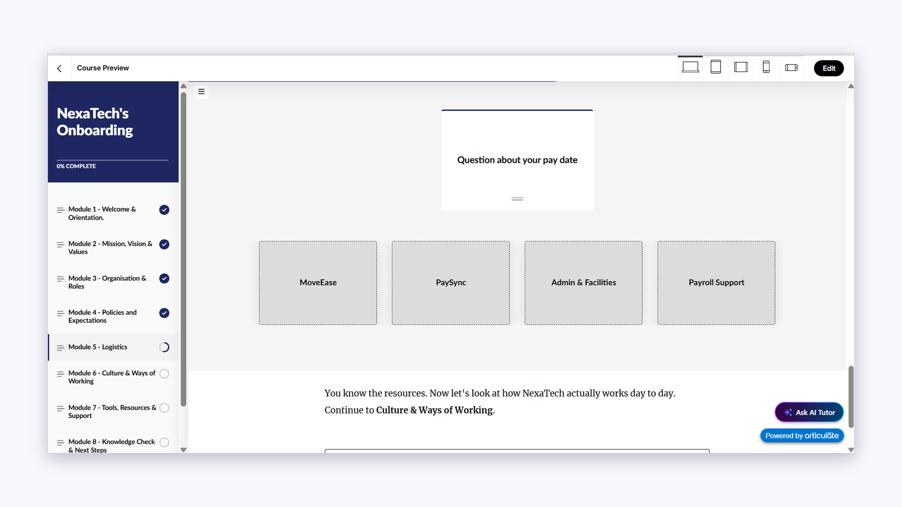
Learners sort everyday questions, such as a pay date query, to the right team or system: MoveEase, PaySync, Admin & Facilities or Payroll Support.
Supporting documentation showing the instructional design process behind the NexaTech Onboarding Pathway.
Documents the onboarding architecture, module structure, learning progression, and overall learner journey.
View Curriculum Map →Shows the detailed scenario, interaction, decision points, feedback, and learner experience design for the fully developed module.
View Storyboard →